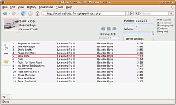
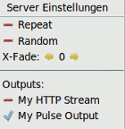

Patchfork
Archivierte Anleitung
Dieser Artikel wurde archiviert, da er - oder Teile daraus - nur noch unter einer älteren Ubuntu-Version nutzbar ist. Diese Anleitung wird vom Wiki-Team weder auf Richtigkeit überprüft noch anderweitig gepflegt. Zusätzlich wurde der Artikel für weitere Änderungen gesperrt.
Zum Verständnis dieses Artikels sind folgende Seiten hilfreich:
Patchfork  ist ein Webfrontend für den Music Player Daemon. Da der Autor des Pitchfork-Client, Roger Bystrøm ("remiss"), und damit auch die Projektseite (alte Pitchfork-Seite bei archive.org ) verschollen ist, hat Joshua Wise diesen Fork (=eigenständige Weiterentwicklung) zunächst als Bugfix-Release (=fehlerbereinigte Version) erstellt.
ist ein Webfrontend für den Music Player Daemon. Da der Autor des Pitchfork-Client, Roger Bystrøm ("remiss"), und damit auch die Projektseite (alte Pitchfork-Seite bei archive.org ) verschollen ist, hat Joshua Wise diesen Fork (=eigenständige Weiterentwicklung) zunächst als Bugfix-Release (=fehlerbereinigte Version) erstellt.
Patchfork ist eine moderne Webanwendung mit PHP- und AJAX-Elementen. So ist die Oberfläche schnell und funktional. Ein Webfrontend ist natürlich optional für den Betrieb eines MPD-Server. Der größte Vorteil ist sicherlich, dass MPD ohne die Installation einer Software auf Client-Seite gesteuert werden kann. 
Installation¶
Patchfork muss auf einem Rechner mit Apache als Webserver und PHP5 installiert sein, wobei der Rechner, auf dem Patchfork läuft, nicht zwangsläufig der selbe Rechner sein muss, auf dem MPD als Dienst installiert ist. Voraussetzung für Patchfork ist daher die Installation von Apache und PHP sowie PHP-Pear.
Die folgenden Pakete müssen installiert werden [1]:
apache2
php5
libapache2-mod-php5
php-pear
Der aktuelle "Snapshot" von Patchfork kann nun von der Projekt-Seite heruntergeladen werden. Anschließend sollte man das Archiv in das Datenverzeichnis /var/www/ des Apache-Webservers entpacken [2].
Alternativ kann man git[3] verwenden:
git clone http://git.joshuawise.com/git/patchfork.git ZIELVERZEICHNIS
Im Archiv von Patchfork befindet sich eine vorgefertigte Konfiguration für Apache2. Hier kann man den Pfad und den Namen des virtuellen Hosts anpassen, falls man nicht /var/www/pitchfork und http://HOSTNAME/pitchfork nutzen möchte.
Die Datei muss an die richtige Stelle kopiert werden [4]. Damit Apache diese Konfigurationsdatei auch beachtet, muss Apache auch gleich seine Konfiguration neu einlesen [5].
sudo cp /var/www/pitchfork/doc/pitchfork.conf /etc/apache2/sites-enabled/ sudo /etc/init.d/apache2 reload
Und letztendlich müssen für das Konfigurationsverzeichnis die passenden Rechte gesetzt werden, so dass der Webserver hier schreiben darf.
sudo chmod 777 /var/www/pitchfork/config
Hinweis:
Workaround für die aktuelle Version (vom 2. März 2010): In der Datei /var/www/pitchfork/inc/Net/MPD.php muss nun Zeile 24 (require_once 'PEAR/Exception.php';) auskommentiert werden [6].
Einrichtung¶
Nun kann man Patchfork in einem Webbrowser öffnen. Greift man zum ersten Mal auf Patchfork zu, so erscheint eine Webseite, auf der man noch Konfigurationen eingeben muss. Die "Konfiguration" kann jederzeit über die Patchfork-Weboberfläche wieder geändert werden.
Verbindungseinstellungen¶
Die Angaben zu den "Verbindungseinstellungen" ergeben sich aus der Konfiguration des MPD-Server.
Benutzeroberfläche¶
Für die "Benutzeroberfläche" sollte man zunächst die Sprache auf "german" stellen. Jetzt sind die weiteren Einstellungen sicherlich leichter zu verstehen.
Metadaten¶
Unter "Metadaten" kann man Angaben zu seinem Amazon AWS Account machen, falls man einen nutzt.
Shoutcast-Integration¶
Gibt der MPD-Server einen Shoutcast-Stream aus, kann man durch Angabe der Stream-Adresse eine Integration in Patchfork erreichen.

Bedienung¶
Ist die Konfiguration gespeichert, erscheint der Patchfork Audio-Player. Ähnlich wie bei herkömmlichen Audio-Playern kann man die Wiedergabe steuern, die Lautstärke ändern, in der Datenbank stöbern und Lieder zur Wiedergabeliste hinzufügen.
Vermisst man eine "Stop"-Schaltfläche, so kann man diese über die "Konfiguration" sichtbar machen.
Über die "Servereinstellungen" kann man die Funktionen Repeat (=Wiederholen), Random (=Zufall) und Crossfading einstellen. Verfügt der MPD-Server über mehrere Ausgabe-Methoden, lassen sie sich hier einzeln an- und abschalten.
- Erstellt mit Inyoka
-
 2004 – 2017 ubuntuusers.de • Einige Rechte vorbehalten
2004 – 2017 ubuntuusers.de • Einige Rechte vorbehalten
Lizenz • Kontakt • Datenschutz • Impressum • Serverstatus -
Serverhousing gespendet von